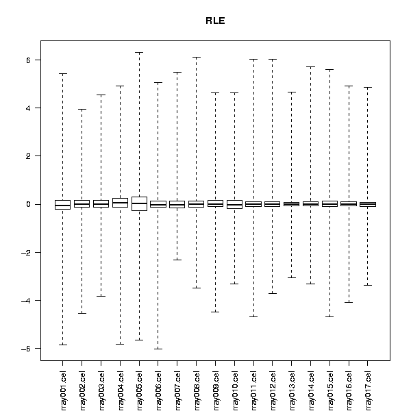
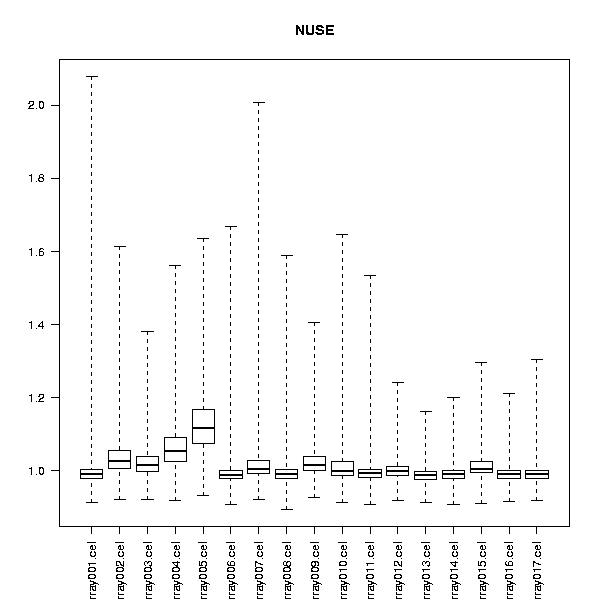

Performs some more advanced quality control for Affymetrix arrays.
Fit a probe-level model to the data, and creates two plots for the dataset. The first plot reports relative log expression values (RLE), and the second the normalized unscaled standard errors (NUSE)
Assuming that most probesets on arrays are not changing, most of the RLE values are close 0. When examining the boxplot, the deviant arrays can be identified by not being centered at 0, or being more spread out than the other arrays.
The standard error from the probe-level model are visualized as boxplots in the NUSE plot. When examining the boxplot, the deviant arrays can be identified by not being centered at 0, or being more spread out than the other arrays.
